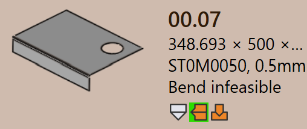

零件状态
当零件导入到 TruSmartCAM 中时，系统会自动为该零件处理相关的钣金技术。在此过程 中，TruSmartCAM 会验证零件的几何形状、材料和可制造性，以确定该零件是否已准备好 进行 tooling。
零件状态显示在零件磁贴上、零件名称下方，指示该零件当前的验证状态。
零件状态类型表示分配给零件的不同验证结果。这些状态指示与零件的设计、材料或 几何形状相关的问题，必须先解决这些问题才能继续进行 tooling。
以下图像显示了验证后可能显示在零件磁贴上的零件状态示例。每种零件状态都指示 特定的验证结果。以下各节介绍了每种零件状态的原因。

零件错误
当零件的设计或几何形状存在问题（如开放轮廓、缺失几何形状或未分配材料）时， 会发生 CAD（计算机辅助设计）错误。这些错误源自 CAD 模型，会阻止零件进一步 处理。
-
Bend infeasible ：TruSmartCAM 会自动尝试为零件 查找有效的折弯方法。如果找不到任何合适的折弯解决方案，则该零件会被标记为 折弯不可行。
-
Cut infeasible ：如果忽略折弯警告，TruSmartCAM 随后会尝试查找切割方法。如果找不到有效的切割解决方案，则该零件会被标记为 切割不可行。
材料错误
-
Material Missing ：零件的厚度从 CAD 模型中 读取，并与 TruSmartCAM 原材料数据库中的材料进行匹配。如果找不到匹配的材料， 则该零件会被标记为 Material Missing 错误。
-
Material not assigned ：如果 CAD 模型没有 材料映射字段，或者该字段为空，则 TruSmartCAM 无法分配材料。在这种情况下， 该零件会被标记为 Material not assigned 错误。
几何错误
-
Open contours detected ：CAD 文件包含一个或多个 开放（不完整）形状，这会妨碍正确的 tooling。
-
Multiple outer contours detected ：CAD 文件 包含多个外部闭合回路，这会在处理过程中造成混淆。
-
Nascent error ：当从电子表格（CSV 或 XLSX）加载零件，但实际的 CAD 文件缺失时，该零件会被标记为初始零件（nascent part）。
-
Geometry missing ：CAD 模型没有有效的几何形状， 或者几何形状无法读取，使其无法用于 tooling。